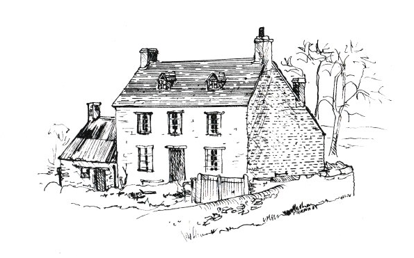

POP GIBBS
Pop was a wonderful village character and lived in the Tchure off Bates Lane. He was handy with repairs on a very wide variety of things, bikes, clocks or soldering and making a bit to fit, this or that. After work in the evening Pop would fix it.
“Be ready tonight, call back hour or two’s time.” A few pence or shillings was all he charged.
‘He was useful with his hands’ was a popular village expression concerning Pop. He would have a go with most things.
Having a couple of armchairs spare and a bit of useful timber in his shed, Pop embarked on a bit of creative furniture. The family were getting not only more but bigger, so Pop thought he would make a good strong settee with all the bits and pieces. Three or four nights Pop laboured pulling to bits, nailing together, reupholstering and what-have-you till it was finished. The family were invited to test it. Pop and 3 or 4 children piled on.
“It’s wonderful” they all said.
“Yes” said Pop. “A good job. Strong. Should last years.” They all agreed.
“Right” said Pop to the biggest children, “Help me get it out of the shed up and into the house.”
But Pop had not only built good and strong, he had also built big and only with the greatest of effort, mother and all, could they budge it, and when they came to the door no way would it go through!
Pop’s neighbour Alphonso, hearing the commotion, came to look, “Come out the way. You be like a body with two left feet going nowhere fast.”
“You get on with it” said Pop’s Mrs. But with all his help it was no good.
“Pop you know what you got to do?”
“No need for thee to say,” said Pop. “I knows: I got to knock the so-and-so thing to bits.”
Poor old Pop, it went round the village like wildfire. Going to work next day, everyone asked him to build them a settee: “A nice big strong one.”
Pop worked at Ardley Pit for years digging and loading stone that was sent to Arbury Cement Works, Leamington way. It was a hard labour job. The quarry was worked at three levels. One hot summer they worked 3 am till 11.30 am because of the heat on the rock face. Men were working three in a gang – digging and blowing with dynamite in the full glare of the hot sun on a narrow ledge in full summer. Just for a few extra bob a week, 5/– (25p) I think. But they push-biked for miles to get that little extra.
The men came from a few of the villages, such as Milton, Bloxham, Adderbury, Souldern, Fritwell, Hardwick, Hethe, Somerton, Gawcott and the Heyfords, each made the journey morning and night. My, they earned that extra few bob! No mechanic help, just shovel, an iron bar, a wheelbarrow and bare hands with plenty of muscle. 60 or 70 men worked there daily, loading the wheelbarrow and dumping into the trucks in the railway siding. As you can guess, a lot of ribbing and rough horse-play went on there to create a bit of diversion from the gruelling hard work.
One incident stands out in my mind concerning Pop at the pit: It was a scorching day and the topic was thirst.
“Next to drink,” said Pop, meaning beer, wine and plenty of it, “lemons – now that’s a good thirst quencher.”
One man said this, one said the other. This was during lunch-break, no-one would waste energy talking at work.
“Lemons squeezed in drink or as they be, that’s the best.”
“What skin, pips, the lot? No man could eat lemons like that.”
“I could,” said Pop.
“Never.”
“I could” said Pop. “I could – a dozen lemons, peel, pips, the lot.” Well, everybody stopped eating, talking or whatever. Some sat open-mouthed.
“No!” But Pop having been pushed into it was obliged to prove it.
“A dozen lemons, no (wrapping) papers on them” said Pop, causing a laugh. So a dozen lemons were produced. In the summer we took baskets of fruit and bottles of pop and walked along the pit once or twice a day in the summertime and sold to the quarry workers, for they would not leave the quarry face for a drink or anything, the job being piecework.
So picture Pop sat on a seat in the mess hut. 12 lemons, his large shut-knife poised to cut the lemons. Two cuts – first in half then, holding lemon together, he sliced the other way into quarters. Knife in one hand, with the other he slowly and almost leisurely proceeded to put a quarter of lemon at a time in his mouth. Chewing slowly and deliberately he polished the 12 lemons off. No haste, no words. The men could not grasp it. They crowded around Pop clapping their hands, guffawing and chattering excitedly. Some just could not contain themselves – they went outside; came back in, some held their stomachs. A fair few were sick, others turned away and could not even look, but Pop he was as cool as a cucumber, the juice running down his chin. When he finished the 12th, deliberately wiped his shut-knife clean and polished it on his tommy-cloth that his lunch had been packed in, packed his basket away.
The whistle blew for afternoon shift and away the workers went to work, Pop in amongst them. Pop got home alright but for four days he was very ill and had to lose three days pay. Lucky it came over the weekend, but as Pop said,
“I eat ’um and I didn’t have anything to drink for nearly a week. Good for quenching the thirst lemons!”
Pop also had a bike that did a bit of roaming, at least that was Pop’s explanation of his excursions, for Pop was a bit of a lad with the ladies: His propped bike against a wall showed where his ‘romance’ was.
One night as Pop was riding his bike home through the village, a woman opened her window and started yelling,
“Help, he’s at it again! Quick somebody. Please help.”
We had been having a lot of stealing and damage to property and sheds in the village. Not big jobs but fiddling, frustrating, niggly ones.
“Oh” thought Pop, “This is it, I’ve got the so-and-so.” Pop jumped off his bike, up the garden path, in the house, right into the fray. Pop said there was no light, the woman was wrestling and shouting. So into the fray went Pop, thumping and got thumped, wrestling and grunting for ten minutes, the woman encouraging Pop ever on.
Suddenly Pop realized as he come up for air, it was in a husband wife fight. Pop got his leg pulled for that. But Pop laughed after for as he said,
“It had its compensations. I called to see how she was next week. And a good few nights after when her husband was on night work. Mind I didn’t want to embarrass the man.”
Alphonso was Pop’s neighbour and drinking companion. Like all true neighbours, they had their good and bad times, rows, and their sociable times.
One night as Pop and Alphonso came stumbling home from the Fox Inn, in the couple hundred yards to the Tchure, first one fell down. The other, with much heaving and effort, got him up, but wobbling, weaving and being so far gone in their cups that he would collapse himself. The other would fall over him in an effort to pick him up and after a few times of change about and “here I am and now I ’ent,” Pop said, “Whoa, I’m puffed out.”
“Waste a’ time,” said Alphonso, laying alongside Pop in the road between them blocking the Fox side but caring not one bit about such things. So, as it approached midnight they lay and meditated, surmised and told a few fibs – one trying to outdo the other. Flat on their backs they lay, not a care in the world. It was a fine moonlight night, the road was comfortable and it didn’t move when laid on, that both were agreed on, but when you tried to walk it moved right, left or just fell away and your feet could not find it, so over you went.
“Best stop here,” said Pop, “safest.”
“See that moon up there,” said Alphonso.
“Yes” said Pop. “I can see her.”
“Well” said Alphonso, “I put that up there.”
“Yes” said Pop.
“I put that up there and made a good job of it, that’ll never fall. I nailed it up there with five good long nails, one in each corner. It’ll never fall. You didn’t know that did you?”
Alphonso thought he’d got Pop with that one, but Pop rose to the occasion:
“Know. ’Course I know. I was the silly bugger as had to climb up and clinch (bend) them five nails around the back and damn dark it was, damn dark!”
With that they both climbed to their feet and Pop very pleased with himself went laughing home, Alphonso trailing behind trying to figure out how Pop had got the best of him – again.
The stories of Pop are many and very varied.
One night when these two fell out, they’d be drinking and came home best of pals. It was dark, they had plenty but their women had fallen out, so Pop with opened door, stood there blinking and trying to get his bearings.
Alphonso was still outside, he had been told the story before Pop and was waiting outside at the bottom of the path. Pop couldn’t see so he yelled abuse and rather unsteadily walked to Alphonso who had the advantage of the light being behind Pop so he didn’t stand a chance. Pop was down first round – flat on his back, and Alphonso was astride him really enjoying his advantage over Pop. Poor old Pop, he wriggled and twisted but he could not get out of it, what with the weight of Alphonso and the drink he’d had he just could not. So Pop, not to be beat, tried subtlety:
“Can you play draughts?” he said.
Taken unawares Alphonso said, “Yes, Pop.”
“Well then it’s your move.” He did and Pop had turned the tables on Alphonso again.
Pop’s bike could have told a good many stories. Like all working men, he had an allotment and after a session of gardening, would stop at The Fox (pub) on his way home as he put it “just to take the edge off his thirst.” His bike would be propped outside against the wall.
One night as Pop came out to ride home on the bike there stood an old maid – seemingly she had been poking her nose in Pop’s drinking habits and started on him. Pop never lost his temper. She really let Pop have it:
“Look not on the wine when it is red, drink is evil, think of your wife and children,” and so on for minutes.
Pop got fed up with it and when she said, “You’re bad, disgraceful, bad.”
Pop let her storm off down the village to her cottage. Pop just followed and propped his bike against the wall by the gate and left it there all night.
The next day was Sunday and just before 11 a.m. the Do-Gooder nearly had kittens when she saw the bike. As Pop remarked,
“She never poked her nose where it wasn’t wanted no more."
Pop bought himself a little 2-stroke motorbike and after a few weeks was lubricating his dry parts in The Fox when talking to Joby the landlord of one thing and other, it was suggested that Pop would chauffeur Joby on a visit to some of the local farming people. Joby as well as the pub’s landlord, travelled in spring with his big shire stallions around the local farms and Joby wanted to visit those who had forgot to pay for last season’s service. Pop had taken on a fair load of drink, just discussing this and that before the new business had been discussed. Then with a few more under his belt, and one for the road, both had had more than plenty.
So with much to-do of buttoning up and turning caps round,
“For wind resistance,” as Pop informed Joby, “When I’m speeding with the rush of air you’d be airborne before I got to the pond."
So Pop got on this little 2-stroke motorbike and crouched over the handlebars. There wasn’t much room left for Joby to see, let alone sit on but with a helping hand from his pub customers, he was lodged on the rear end of Pop. Well more or less, or I should say less of more. But they were on.
“Hold on to me” said Pop. “Where I go I will take you.”
“Well done Pop, but it’s the first time I don’t feel too safe so take it steady around the corner.”
Pop had got the engine running. He put her in gear and opened it out, blue smoke filled the pub yard. Then Joby opened one eye:
“Steady round this corner,” he yelled. “A lot of folks about the village,” as he bobbed about on the back, well sort of half on and half off, still clutching Pop. In fact he was now hanging on for grim death.
“Steady, Pop,” yelled Joby. “You’ll run somebody down. Never seen so many folk about. Do be careful Pop.”
The bike roared on. Two big men crouched low, blue smoke was pouring out from under Joby’s tail.
At last Pop cut the engine and disengaged gear. A crowd was gathered around. Joby slid stiffly off,
“Didn’t take long,” he said to Pop. “Not long at all.”
“Well” said one chap, “you still got her on the stand. You be still in the pub yard.”
“But all those people we passed?”
“That was us walking around you.”
“The corners we went round?”
“The same one you looked up and see. Every time the one out of the pub yard.”
Pop sold the bike.
”I never got nowhere fast,” he said.
During the 1940’s war Pop, who had fought in the mud of 1914 – 1918 War, was having to go out of the village to find beer. If they had any delivered to the local pubs, Pop and his fellow drinkers would try to drink it all that night and very often did. So Pop had to get his bike out and go to find where there was any.
One night Pop tracked it down to the Fritwell pub, two miles away. Having done his best to drain all casks empty, Pop came outside to come face to face with the local bobby. Pop knew he had no lights so he thought I got to play this safe. So taking hold of his bike he started to push it.
“Where you going?”
“Souldern,” said Pop.
“No lights” said bobby.
“I’m not going to ride it” said Pop, “just push it.”
“You can’t” said the law. “Blackout and all that. Someone could run into you and the bike.”
“Well” said Pop, “I’ll carry it. Good night,” said Pop lifting it up onto his shoulder thinking he’d ride it when he got out of the village.
“Well I’ll walk with you. I’m coming to Souldern.” So Pop walked and carried the bike two miles back.
“Took all the pleasure out of the evening,” said Pop. “Every step I walked he walked, step for step. If I stopped, he stopped. So was the evening spoilt.”
We were short of a news delivery boy one time and it was getting later and later when the newsagent got around with the Sunday paper, so Pop took on temporary-like. So Sunday morning Pop and bike delivered around the Sunday paper.
Pop was always in demand. He was mending punctures and whatever to a second generation of Belchers, his pipe and his bike were still his main friends along with a drop of something to “oil the works.” A glass or two of my Dad’s homemade parsnip wine and Pop was happy. In fact, he came in the evenings to do a few chores for which he had a bottle of wine to take home with him. His jobs were many and varied, from washing the milking utensils, to haymaking and harvesting, help with the farm machinery – the lot: Pop was there. Pop also helped to brew the wine. Dad and Pop did everything.
One day some newly made wine had to be drawn off from the big copper that Dad brewed in, to the big cask, 30 to 40 gallons of it. Dad did this with the aid of a piece of tube. Somehow Pop got the job of sucking it up to get it running from one to the other. I think Dad did it on purpose. The wine still warm and new, Pop sucked and sucked with 30 to 40 gallons and a tube, he couldn’t go wrong. Dad warned him, “If you swallow much of it, you’ll have the runs for a week."
After Pop knocked the tube out 6 or 7 times and had a belly full, Pop made a hasty retreat around to his home, and he said:
“I sat in the little house all night and biggest part of next day".
Pop came home one day for his meal, Ma Gibbs cut the top off the loaf that had not been properly kneaded. Said Pop:
“One of you kids take this loaf back to Art Boddington, ’ere’s a hole in it weighs 2 lbs.”
Ma had a gramophone, not many records but one she loved and played over and over again. For months Pop didn’t seem to mind, but one evening Pop was in a bad mood. I think he was short of baccy or the children were playing up. Pop came storming in and kicked the gramophone up higher than a kite. As Ma said to neighbour:
“He broke the gramophone and smashed my record ‘Jesus loves little ones like me.’ ”
It wasn’t often that Pop was destructful. His job was mending and if you took something broken he would often say:
“What did you want and do that for?”
When you explained how you went too fast down the lane and come a cropper or you had tightened something too much, he’d take his pipe out of his mouth and laugh,
“Bigger fool you then.”
Pop got fed up one time and one thing led to another, and more of an excuse to have a pint or two than anything Pop said,
“I’m going.”
So Pop started off down the garden path. Ma couldn’t let him go.
“Come back,” she cried. “Think of me and the children.” Still Pop strode on. Again Ma cried out into the quiet of the night
“Come back Dad, you know I loves you.”
“I ask you, what could I do?” said Pop. But Pop had some stick over that, half the village pulled his leg.
Pop didn’t always get the best of Ma. One day Pop had a few drinks early in the day but like all men found his way home just before dinner. He wanted to know why wasn’t it ready? and so on.
“Sit down” said Ma “I am about to get it. Who knows when you be coming home. Sit down by the fire a minute.”
Pop sat down. Ma got the pan on, popped 4 or 5 eggs in and got things going. Pop relaxed in front of fire and when dinner was dished up Pop was ‘busy driving sheep’ (snoring), so Ma dishes up the children’s eggs and bacon. When she got to Pop,
“Ah you, old devil, I’ll have you!” Dipping a bit of bread in the fat and the eggs, Ma smeared it around Pop’s mouth. Quietly and quickly the rest ate their dinners, Ma washed up and cleared away.
Later on Pop woke up, “Where’s the dinner Ma?”
“You’ve had it” chorused the kids. Pop put his hand to his mouth, and went to looking glass. There it was around his mouth. “Well, I’ve forgot.”
“No matter what you say,” said Ma, “you’ve had it.”
Pop was a good talker and could, like most Belchers, tell a good tale. In the Fox one night the topic was mice: they were here, they were there, they were everywhere.
“Damn it, you ’as to turn the bed back and change the sheets. It’s no laughing matter” said Alphonso.
“Well” said Pop “I ’ent got nun, no not a single one. I got rid of little vermins. No trouble at all.”
“How did ya’ sort a do that Pop,” asked Alphonso.
“Well, I’ll tell you in a min when I’ve had another pint. You see I’ve got this ‘Dry Husk’ in me throat. I must do something about that.” Pop got his pint and settled back on the stool.
“Now between you and me and the gatepost, it was as easy as falling over. I got a tin of snuff and a bit of cheese and a mousetrap. I put the cheese by the trap, on the stone floor, and sprinkled the snuff around the cheese.”
“What for Pop?”
“You hold hard a bit and I’ll tell you. The mice come out of their holes, when we had gone to bed. See the trap hadn’t been set, the cheese laying there, they bust out laughing and as they danced around the cheese laughing, the snuff blew dust-like in their faces. The mice sneezed, banging their noses on the stone floor and killed themselves. When I come downstairs next morning, there they lay, eighteen big ’uns, an’ two half grown ’uns, dead as mutton. Not a mouse in our house.”
Pop was getting to the time, as he said, things started to wear out, fall out, rust out, or spread out. He was having an argument with Alphonso one day down the garden Pop’s Mrs shouted out the cottage window,
“Stop it you two.”
“You keep out of it you silly woman. What do you want to get mixed up with it for?” shouts Pop.
But Pop’s Mrs did get mixed up with it, several times.
Alphonso and her were having a go one time over the soft, rain water that ran off the sheds or “hovels” shared by the two families. One word led to another and Pop’s Mrs, who was about to get a bucket of water out of the rain water butt, dipped the bucket in and threw a pint or so over Alphonso.
He grabbed the bucket out of her hands, filled it, flung the bucket full of ice cold water straight in her face from two yards. She took the lot smack, bang wallop down the front of her – ‘where the little tatters grow’ and out of the bottom of knickers. She gasped and spluttered and shuddered and shivered. But not a word could she get out, and all the heat had gone out of the flare-up. Alphonso stalked off.
As time went by, Pop’s laugh “Ha ah” was still heard but he pulled a bit harder on his pipe, even his bike had slowed down, also it found its way home by shorter cuts, instead of taking him around visiting so many of his lady friends.
“Not my fault” Pop used to say. “It’s that bike, it just goes.”
But his days of roving were getting or got closed down when he had a few to drink, he teetered back on his heels, drew hard on his pipe and tried to get home.
One evening in the late summer, Pop and Alphonso had been drinking and both started for home at the same time. The doorway wasn’t wide enough for both to get out at once. They sorted that one out, then and half fell, half stumbled down the steps into the Fox yard. The pump stood 4 or 5 yards from the door. Pop and Alphonso collided into it. Pop, always up to tricks stepped around it pulling the handle up smack into Alphonso’s beer basket, as least where the night’s beer was resting.
“Waugh” went Alphonso flat on his back. Pop stood laughing. Up got Alphonso and set into Pop who having the pump for armour enjoyed the game, lifting the handle at the right time every now and again to keep things going. But at last Alphonso got at Pop and managed to winkle him out and Pop had to do something about it, so with his arms going like windmill sails, he flailed away. But he was going backwards, downhill from The Fox out into High Street and Alphonso doing likewise backed up the Fox side. They finished up 30 yards apart with no-one hurt – only Alphonso’s knuckles where he’d beat the pump.
Why, you may ask, do we call Pop, ‘Pop’? Well firstly he had eight children at home with his Mrs. Then with his bike roaming it seemed polite to say Pop. Who could say he wasn’t Pop’s child? Not Pop. His policy was, as he oft-time repeated when giving advice to his children, “love ‘um and leave ‘um, then forget ’um."
Alphonso would always tell this repetitive story when in his cups:
One dark night a band of robbers were seated around a campfire when one of them said ”Alphonso tell us a tale.“ Alphonso seated himself on the trunk of a fallen trees and began to relate the following incident —
One dark night a band of robbers were seated around a campfire when one of them said “Alphonso tell us a tale.” Alphonso seated himself on the trunk of a fallen tree and began to relate the following incident —
One time, Pop’s young son came running up the stairs as his mum was coming down with the ‘gozunder’ to empty it. (It was what goes under the bed.) No upstairs loos or toilets, or down for that matter, in the houses. The gozunder was full. It would be with Pop’s intake of drink. As Ma came down, Ramsey running up, he got a quick shower – the contents of the pot. He came back to work smelling of roses!
After he’d rubbed off as much shower as he could, he got some roses and rubbed the petals over himself.
“Well I shouldn’t have known Ramsey” I said, “if it hadn’t made your hair curl, it looks lovely.” Like Pop, he did laugh.
Ramsey when he was about 8 years old did a few hours work down at the Mill House. Our Souldern Mill was known in King Henry VIII’s time as The Mill Noble, that being the yearly rent to the King. I believe the only one with that distinction. One of Ramsey’s jobs was to feed the poultry and collect eggs. This necessitated his walking across a muddy log, over the brook flowing through the Mill that turned the mill wheels. As Ramsey walked over, the miller, lucky for Ramsey, was outside, saw him slip and fall in. He knew that with the mill working that the boy would be killed by the mill’s machinery, so he ran into the Mill and stopped it, then out and down to the other end of the Mill a few minutes out into the sunlight. Ramsey followed with the stream. When he went home Ma was very upset he’d got his new waistcoat on. she yelled:
“Did you get your waistcoat wet? You didn’t! Not your new waistcoat.”
“Yes she did yell – she didn’t think I should have got it wet,” he laughed.
Not long after the miller, who kept tabs on Ramsey and his collecting the eggs, found 20 odd eggs up in a tree. He said,
“Wow these hens could lay eggs up in the branches of a tree. Tied ’um up in a bag as well!"
Ramsey came to work for us on the farm and at 14 years old went to live in the farm at Chisnell with my brother Tom. One day we were walking the fields with the spaniel and sheepdog (Bob). We were walking the lock field of one of our neighbours, hoping for a rabbit or some sort of game. In the field was several hunter horses and a billy goat. He was like a guard dog and would charge you and did give you a butt up the backside if you wasn’t careful. This one evening we were about 30 yards from our fence when the billy came full gallop, head down, he meant business.
“Come on, Ramsey.”
So we didn’t stop to argue – we ran, I cleared the fence, turned to see just in time Ramsey was holding his own about 3 yards in front, but instead of taking a flying jump he had to sort of steady himself, crouch down and then take off. Billy caught him as he was crouched, bang, he was airborne, right into the hedge, half over caught in a thorn bush. I freed him but he was mad. We fought over the gun.
“I’ll kill the so-and-so. I’ll blow him to hell and back.”
Minutes it took to calm him down. A good half hour before I dare laugh.
“You did look funny, your arse stuck out. What a target for that billy goat.” Like Pop after a pipe of bacca he laughed.
“That cunning, crafty ole so-and-so, he did catch me one,” he said, rubbing his ask-no-questions.
Ramsey grew so fond of farm life and was very willing to learn all sections of our mixed farm, machinery, horses, cultivation, livestock etc. Under my brother Tom’s tuition, at 68 years old, he was still working for our family.
Pop’s son Ramsey’s real name was Ronald, but he got his name Ramsey from my mother.
Every evening after school Ramsey came to work doing odd jobs on the farm. If mother wanted a small job done, she would call Ronald to the kitchen door. Ramsey would make a detour around to the door on his way down to the farm, knowing that my mother would have a piece of cake or a lump of pudding to keep him going till he finished his work and collected his evening meal.
One afternoon Ramsey came into view. Mother cut a good lump of bread pudding and opened the kitchen door. No Ramsey.
“Ronald,” she called. “Ronald Ramsey MacDonald where are you?” Ramsey was very proud of his new name and pleased to be rechristened by mother and so his name stuck.
